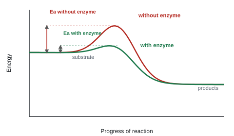
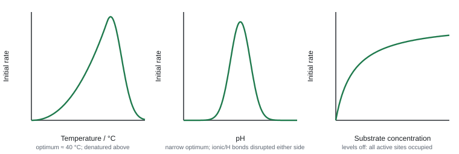
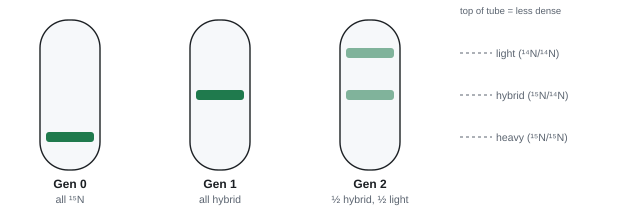

Proteins and DNA
Proteins do most of the work in a cell, and DNA holds the instructions for building them. This topic follows the story from amino acids, through the folding of a polypeptide into a working protein, to the double helix of DNA and the way it copies itself before each cell division.
Spec2.6Amino acids and protein structure
(i) Know the basic structure of an amino acid. (ii) Understand how polypeptides form by condensation, making peptide bonds. (iii) Understand how primary structure determines secondary, tertiary (3-D) structure and properties, including globular vs fibrous proteins and the bonds involved. (iv) Know the structure of a globular protein (haemoglobin) and a fibrous protein (collagen) and how it relates to function.
Amino acids and peptide bonds
- Every amino acid has a central carbon attached to: an amine group (–NH₂), a carboxyl group (–COOH), a hydrogen, and an R group (side chain). There are 20 amino acids, differing only in the R group. (Specific R groups don't need learning.)
- Condensation: the –OH of one amino acid's carboxyl group and an –H from the next one's amine group are removed as water, forming a peptide bond (–CO–NH–). Two make a dipeptide; many make a polypeptide.
- Hydrolysis (by protease enzymes) adds water and breaks the peptide bond.
- Calculation: n amino acids are joined by n − 1 peptide bonds, so the mass of a polypeptide = total mass of the amino acids − 18 × (n − 1), one water lost per bond.
Four levels of structure
| Level | What it is | Bonds holding it |
|---|---|---|
| Primary | the sequence of amino acids (set by the gene) | peptide bonds |
| Secondary | the chain folds into an α-helix or a β-pleated sheet | hydrogen bonds between C=O and N–H groups of the backbone |
| Tertiary | the whole chain folds into a specific 3-D shape | bonds between R groups: hydrogen bonds, ionic bonds, disulfide bridges (between cysteines; strong, covalent), hydrophobic interactions |
| Quaternary | two or more polypeptide chains together (sometimes with a prosthetic group, e.g. haem) | same as tertiary |
Why primary structure matters: the sequence decides which R groups are where, so it decides where the bonds form, so it decides the 3-D shape, which decides the function (e.g. the active site of an enzyme). Change one amino acid (a mutation, 2.14) and the shape can change; e.g. in sickle cell anaemia one polar amino acid in haemoglobin (glutamic acid) is replaced by a non-polar one (valine), and the haemoglobin clumps.
Globular vs fibrous
| Globular (e.g. haemoglobin, enzymes, insulin) | Fibrous (e.g. collagen, keratin) | |
|---|---|---|
| Shape | compact, spherical | long, thin strands |
| R groups | hydrophobic inside, hydrophilic outside | repetitive sequence |
| Solubility | soluble in water | insoluble |
| Role | metabolic: transport, enzymes, hormones | structural: strength |
Haemoglobin (globular)
- Quaternary structure: four polypeptide chains (2 α, 2 β), each with a haem prosthetic group containing Fe²⁺ that binds O₂.
- Hydrophilic R groups on the outside → soluble → carried in solution inside red blood cells.
- Its shape changes slightly as O₂ binds (cooperative binding, 1.9).
Collagen (fibrous)
- Three polypeptide chains wound into a triple helix (a rope-like structure).
- Every third amino acid is glycine (the smallest), so the chains can pack tightly. The sequence repeats and is rich in proline and hydroxyproline.
- Hydrogen bonds between the chains, and covalent cross-links between neighbouring molecules, form fibrils; the ends of molecules are staggered so there are no weak points. Fibrils bundle into fibres.
- Result: very high tensile strength and insoluble → found in tendons, skin, bone and artery walls.
Recommended practical: biuret test for protein
Add biuret reagent (copper(II) sulfate in alkaline solution) to the sample. Purple/lilac = protein (it reacts with peptide bonds); stays blue = no protein. Using colour standards of known protein concentration makes it semi-quantitative, as in CP1.
Haemoglobin: "four haem groups" (iron only credited if linked to haem) · "globular, polar/hydrophilic R groups outside" · "soluble in the cytoplasm of red blood cells" ("soluble in blood" is not accepted) · "cooperative binding between subunits"
"sequence of amino acids" (primary) · "hydrogen bonds between amino acids" (secondary; not "between R groups") · "bonds between R groups: hydrogen, ionic, disulfide" (tertiary; naming a wrong bond loses the mark) · "more than one polypeptide" (quaternary) · "hydrophilic R groups on the outside so soluble"
Bond name: "peptide". Not accepted: "dipeptide bond". (Avoid "amide": accepted once, rejected later.)
Drawing an amino acid: central C with its H, amine, carboxyl and R group. Check every C has 4 bonds, N 3, O 2, H 1.
Collagen: "fibrous", "three polypeptide chains / triple helix", "hydrogen bonds between the chains", "every third amino acid is glycine" → tight packing, "cross-links" → tensile strength.
Heating: "hydrogen bonds break", R groups vibrate more; "peptide bonds are not affected", so the primary structure is unchanged. A thermostable protein has "more / stronger bonds", so "more energy is needed to break them".
Often asked as: draw an amino acid or a peptide bond; describe collagen's structure; explain why a changed amino acid stops a protein working; explain thermostability.
- Relative bond strengths: disulfide (covalent) > ionic > hydrogen. More disulfide or ionic bonds → more energy needed to break the tertiary structure → more thermostable (WBI11 Jun 2025).
- Sickle cell haemoglobin (HbS): valine's non-polar R group turns away from water and forms hydrophobic interactions with other haemoglobin molecules, so they stick together in the cytoplasm of red blood cells (WBI11 Jan 2022).
- Collagen mutations: replacing a glycine with an amino acid with a larger R group stops tight packing and weakens the triple helix (osteogenesis imperfecta) (WBI11 Jan 2025).
- Proinsulin → insulin: a protease hydrolyses peptide bonds to cut out a section of the chain (WBI11 Oct 2022).
- Proteins contain C, H, O, N and often S (WBI11 Oct 2025).
"Dipeptide bond" is the commonest error. It's a peptide bond.
Leaving the H off the central carbon when drawing an amino acid.
Not saying where hydrogen bonds are: between the chains (collagen) or between amino acids (secondary structure).
Writing "iron" for haemoglobin: say "iron ion (Fe²⁺) in a haem group".
Spec2.7Enzymes: how they work
(i) Understand how enzymes work, and their specificity, in terms of their 3-D structure. (ii) Understand that enzymes are biological catalysts that lower activation energy. (iii) Know that intracellular enzymes work inside cells and extracellular enzymes outside them.
Mechanism and specificity
- Enzymes are globular proteins. Their tertiary structure creates an active site with a specific shape.
- Only a substrate with a complementary shape can fit and bind, forming an enzyme–substrate complex. That's why each enzyme is specific to one substrate (or one type of reaction).
- Induced fit model: the active site changes shape slightly as the substrate binds, moulding around it. This puts strain on the substrate's bonds (or brings reacting groups close together), making the reaction easier. Products are released and the enzyme is unchanged, ready to be reused.
- (The older lock-and-key model treated the active site as rigid. Induced fit replaced it because it explains why binding changes the enzyme's shape.)
Catalysts that lower activation energy
- Activation energy is the energy needed to start a reaction.
- Enzymes lower the activation energy, so reactions happen fast at body temperature, which would otherwise need far higher temperatures.
- They don't change the overall energy difference between substrate and product, and they aren't used up.

Where enzymes work
| Intracellular (inside cells) | Extracellular (secreted, work outside cells) |
|---|---|
| e.g. catalase (breaks down toxic hydrogen peroxide), enzymes of respiration, DNA polymerase, RNA polymerase | e.g. amylase (starch → maltose), trypsin and pepsin (proteins), lipase (lipids) in digestion |
| made and used in the same cell | made in the cell, released by exocytosis |
Biological catalyst: define both words: "protein found in living organisms" + "speeds up a reaction without being used up / lowers the activation energy".
Mechanism: substrate "binds to the active site" → "enzyme–substrate complex" → activation energy lowered → bond broken by hydrolysis; name the bond (peptide, glycosidic). "Complementary" on its own isn't enough.
Specificity: the active site's shape depends on its R groups; the other substrate has a "different shape / is not complementary". Deal with both substrates.
Activation-energy diagrams: Ea is lower with the enzyme; the overall energy change is the same.
Often asked as: activation-energy diagram MCQs; why an enzyme acts on one substrate but not a similar one; enzyme action in a new context (lactase, proteases); inhibitors.
- Competitive inhibitor (WBI11 Oct 2025): shape similar to the substrate, so it binds to the active site → "fewer enzyme–substrate complexes formed per unit time". Adding more substrate outcompetes it, so the maximum rate can still be reached.
- Non-competitive inhibitor (WBI11 Oct 2025): binds elsewhere on the enzyme, at an allosteric site → "the active site changes shape" → fewer active sites the substrate can bind to. More substrate doesn't help: the maximum rate stays lower.
- Warfarin is a competitive inhibitor: its structure is similar to vitamin K, so it blocks the active site of the enzyme that recycles vitamin K for making clotting factors. Extra vitamin K competes with it. "Non-competitive" is not accepted (WBI11 Oct 2020).
- Metabolic pathways: the product of one enzyme is the substrate of the next (WBI11 Oct 2019).
- Active-site size: a larger active site can bind more substrate per unit time but may hold it less tightly (WBI11 Jun 2025).
"The substrate and active site have the same shape." They have complementary shapes. And enzymes are denatured, not "killed".
Putting the active site on the substrate. Mixing up lactose (the substrate) and lactase (the enzyme).
Saying a protease breaks hydrogen or disulfide bonds: it hydrolyses peptide bonds.
Spec2.8Core Practical 4: rate of enzyme-controlled reactions
Investigate how temperature, pH, enzyme concentration and substrate concentration affect the initial rate of enzyme-catalysed reactions.

How each factor works
- Temperature: as temperature rises, molecules have more kinetic energy → more frequent successful collisions between enzyme and substrate → more enzyme–substrate complexes → faster rate. Above the optimum, bonds holding the tertiary structure (especially hydrogen bonds) break → the active site changes shape → substrate no longer fits → enzyme denatured → rate falls fast. Denaturation is permanent.
- pH: the H⁺ / OH⁻ concentration changes the ionisation (charge) of R groups, which affects the ionic and hydrogen bonds that hold the tertiary structure (and charges in the active site). Away from the optimum pH the active site changes shape; at extremes the enzyme denatures. Different enzymes have different optima (pepsin ≈ pH 2, amylase ≈ pH 7).
- Enzyme concentration: more enzyme → more active sites → rate rises in proportion, as long as substrate is in excess.
- Substrate concentration: rate rises at first (more substrate molecules → greater chance of collisions with active sites), then levels off when all active sites are occupied (saturated); enzyme concentration is now the limiting factor.
Measuring initial rate
- Rate is fastest at the start, because substrate is used up as the reaction goes on. So compare initial rates.
- Plot product formed (or substrate left) against time, draw a tangent to the curve at t = 0, and find its gradient.
Worked example: initial rate from a tangent
O₂ produced by catalase is plotted against time. The tangent at t = 0 passes through (0 s, 0 cm³) and (20 s, 9.0 cm³).
Initial rate = change in y ÷ change in x = 9.0 ÷ 20 = 0.45 cm³ s⁻¹.
Rate can also be found as 1 ÷ time to reach an end point (e.g. time for iodine colour to disappear), units s⁻¹.
Core practical 4: two standard set-ups
Catalase + hydrogen peroxide (e.g. enzyme concentration): mix a buffer, H₂O₂ and catalase (or potato/yeast extract) in a conical flask connected to an upside-down measuring cylinder (or gas syringe) to collect O₂. Read the O₂ volume every 10 s for 60 s. Repeat for each enzyme concentration, 3 times each.
Amylase + starch (e.g. temperature or pH): mix starch and amylase (pre-incubated at the test temperature/pH in a water bath with a buffer). Every 10–30 s, put a drop onto iodine on a spotting tile; record the time when it stays orange-brown (all starch digested). Or follow the fall in blue-black colour with a colorimeter.
Control variables: the other three factors (temperature with a water bath, pH with a buffer, and the volumes and concentrations), and the source and age of the enzyme. Leave solutions to reach temperature before mixing (equilibrate).
Rising part of a rate–substrate curve: "more substrate molecules" → "greater chance of collisions with the active site" → more enzyme–substrate complexes. A bare "more collisions" is ignored.
Plateau: "all active sites are filled / enzyme is saturated". "Substrate is used up" is ignored.
High temperature: kinetic energy → "R groups vibrate" → bonds break → "active site distorted" → "enzyme–substrate complexes can't form". Write "denatured", not "starts to denature".
pH: "changes the ionisation of R groups" → bonds break → active site changes shape.
Rate = change in product (or substrate) per unit time, with units, e.g. cm³ s⁻¹ or mmol dm⁻³ min⁻¹. No time unit (or "a.u." alone) loses the mark.
Sketching the curve at the optimum: steeper, levels off sooner, at the same final level if the substrate is limiting.
Often asked as: explain each region of a rate–substrate curve; tangent for initial rate; conclusions from a pH × temperature table; immobilised v free enzyme data (6-mark).
- Immobilised enzymes, e.g. lactase trapped in alginate beads (WBI11 Jan 2026): can be reused; the product isn't contaminated with enzyme; active over a wider range of pH and temperature (higher optimum temperature), because "alginate holds the R groups in place / stabilises the active site", reducing vibration.
- Rate equation (given in the question): V = Vmax × S ÷ (K + S), where K is the substrate concentration at ½Vmax (WBI11 Jan 2020).
- Below the optimum, R groups vibrate a little and slightly distort the active site, but the extra collisions outweigh this, so the rate still rises (WBI11 Jun 2022).
"At high temperature the enzyme moves too fast to bind." No: above the optimum the active site changes shape because bonds in the tertiary structure break, so the substrate is no longer complementary. Below the optimum, enzymes are not denatured; they just have less kinetic energy.
Explaining only one region of a curve: cover the rising part and the plateau. Say "molecules", not "particles".
Reading values off the curve when a tangent is needed; the tangent must touch the curve at the stated time. Give units and sensible decimal places.
"Immobilised enzymes are more efficient" or "the curve shifts right" score nothing: say what happens to activity and why.
Claiming an exact optimum from widely spaced readings. In a data table, draw conclusions rather than describing each row.
Spec2.9Nucleotides, DNA and RNA
(i) Know the structure of mononucleotides (deoxyribose or ribose + phosphate + a base: T, U, A, C or G) and of DNA and RNA as polynucleotides joined by condensation, forming phosphodiester bonds. (ii) Know how complementary base pairing and hydrogen bonding between two strands form the DNA double helix.
Nucleotides
- A nucleotide = a pentose sugar + a phosphate group + a nitrogenous (organic) base.
- The base is joined to carbon 1 of the sugar, the phosphate to carbon 5.
- Condensation between the phosphate of one nucleotide and the sugar of the next (at carbon 3) forms a phosphodiester bond. A chain of these is a polynucleotide, with a sugar–phosphate backbone.
DNA vs RNA
| DNA | RNA | |
|---|---|---|
| Sugar | deoxyribose | ribose |
| Bases | A, T, C, G | A, U, C, G |
| Strands | two, forming a double helix | one |
| Length | very long | much shorter |
| Job | stores genetic information stably | carries the code (mRNA), brings amino acids (tRNA), part of ribosomes (rRNA) |
Bases are either purines (two rings: A, G) or pyrimidines (one ring: C, T, U).
Base pairing and the double helix
- The two DNA strands are held together by hydrogen bonds between complementary bases: A–T (2 hydrogen bonds) and C–G (3 hydrogen bonds). In RNA, A pairs with U.
- A purine always pairs with a pyrimidine, so the two strands stay a constant distance apart.
- The strands run in opposite directions (antiparallel) and twist into a double helix. The bases are on the inside, protected; the sugar–phosphate backbone is on the outside.
- Many hydrogen bonds together make DNA stable, yet each one is weak, so the strands can be separated for replication and transcription.
Worked example: base percentages
A DNA sample is 22% adenine. A pairs with T, so T = 22%. A + T = 44%, so C + G = 56%, and C = G = 28% each.
DNA only: deoxyribose, thymine. RNA only: ribose, uracil. Both: phosphate, adenine, cytosine, guanine. Write base names in full.
"Phosphodiester bonds formed by condensation (loss of water)"; complementary bases held by hydrogen bonds in a "double helix" ("helix" alone loses the mark).
Purine pairs with pyrimidine "so the strands are parallel", i.e. the helix has a constant width.
mRNA v tRNA: both single-stranded, ribose, A/U/C/G, phosphodiester bonds; mRNA is linear, of variable length, with codons; tRNA is clover-leaf shaped with hydrogen bonds, an anticodon and an amino acid binding site. "tRNA carries an amino acid" is ignored as a structural difference.
Bonds in double-stranded RNA: phosphodiester (sugar–phosphate), covalent (base–sugar), hydrogen (between bases): one mark each.
Often asked as: DNA / RNA Venn diagrams; draw a nucleotide, or two joined; compare mRNA and tRNA; base percentage calculations.
- Nucleotides contain C, H, O, N and P (WBI11 Jun 2021).
- One turn of the helix is 3.4 nm long and holds about 10 base pairs, so adjacent base pairs are about 0.34 nm apart (WBI11 Jan 2019).
- DNA mass and copies: after n divisions one molecule gives 2ⁿ copies; convert daltons to grams with the value given (1 Da = 1.67 × 10⁻²⁴ g) (WBI11 Oct 2022).
Phosphodiester bonds run along a strand; hydrogen bonds run between the strands. Don't mix them up when labelling diagrams, and don't join nucleotides in a strand by hydrogen bonds between their bases.
Drawing the base on the wrong carbon (it's C1), writing "P" for phosphate, or giving letters instead of base names.
Drawing a base pair when one nucleotide was asked for. In comparisons, write "both" for shared features.
Spec2.10DNA replication and Meselson and Stahl
(i) Understand DNA replication, including the role of DNA polymerase. (ii) Understand how Meselson and Stahl's experiment supported semi-conservative replication and refuted the competing theories.
Semi-conservative replication
- The enzyme DNA helicase breaks the hydrogen bonds between bases and unwinds the double helix, separating the two strands.
- Each strand acts as a template.
- Free DNA nucleotides in the nucleus line up against the exposed bases by complementary base pairing (A–T, C–G), held by hydrogen bonds.
- DNA polymerase joins adjacent nucleotides by condensation reactions, forming phosphodiester bonds in the new strand. It also proofreads, checking each new base pair and correcting mismatches.
- Each new DNA molecule contains one original strand and one new strand: semi-conservative replication.
Replication happens before cell division, so each daughter cell gets an identical copy of the DNA.
Three competing theories
- Conservative: the original double helix stays intact; the copy is made entirely of new DNA.
- Semi-conservative: each new molecule is one old strand + one new strand.
- Dispersive: each new molecule is a patchwork of old and new sections along both strands.
Meselson and Stahl's experiment
- Grew bacteria for many generations on a medium containing heavy nitrogen (¹⁵N), so all their DNA was "heavy" (nitrogen is in the bases).
- Moved them to light nitrogen (¹⁴N) and let them divide once, then twice.
- Extracted the DNA each time and centrifuged it; heavier DNA settles lower in the tube.

| Generation in ¹⁴N | Conservative predicts | Dispersive predicts | Semi-conservative predicts | Observed |
|---|---|---|---|---|
| 1 | two bands: heavy + light | one intermediate band | one intermediate band | one intermediate band |
| 2 | heavy + light (more light) | one band (between intermediate and light) | intermediate + light (equal amounts) | intermediate + light |
- Generation 1 rules out conservative (no heavy band).
- Generation 2 rules out dispersive (two bands, not one).
- Only semi-conservative fits both.
Grow the bacteria in heavy nitrogen for several generations so that all their DNA is heavy.
Transfer them to light nitrogen. After one generation there is only an intermediate band. The conservative model is ruled out, because it would give a heavy and a light band.
After a second generation there is an intermediate band and a light band. The dispersive model is ruled out, because it would give only intermediate DNA.
Conclude that each new molecule contains one original strand and one newly made strand, which is the semi-conservative model.
For each model, state what it predicts and why the result rules it out. Explain the intermediate band: "each molecule has one ¹⁵N strand and one ¹⁴N strand, so it has an intermediate density."
"Semi-conservative": "both parent strands act as templates"; each new molecule has "one parent strand and one new strand". Explain both halves of the word.
DNA polymerase: lines up nucleotides along the template and "forms phosphodiester bonds". "Forms hydrogen bonds" is ignored. If asked for roles (plural), give more than one.
Enzymes: helicase, DNA polymerase, (DNA ligase). "RNA polymerase" is wrong here.
Meselson–Stahl as % of DNA (heavy / hybrid / light): start 100 / 0 / 0 → gen 1: 0 / 100 / 0 → gen 2: 0 / 50 / 50 → gen 3: 0 / 25 / 75. Conservative after one generation: heavy + light; dispersive: one intermediate band.
Replication gives "genetically identical" copies, so daughter cells make the same proteins. "Identical" alone isn't enough.
Often asked as: explain semi-conservative replication; roles of DNA polymerase; predict the bands for each model; complete a percentage table; read density-peak graphs.
- Calculations of the proportion of DNA in each band after n generations: after 3 generations in ¹⁴N, 2 of 8 molecules are hybrid and 6 are light → 25% hybrid, 75% light. The number of hybrid molecules stays at 2 per original molecule.
- DNA polymerase proofreading keeps the mutation rate low (WBI11 Jan 2025).
- DNA ligase joins sections of new DNA together (WBI11 Jun 2019).
- Replication bubbles (WBI11 Jan 2022): replication starts at many points and runs in both directions. Copying 1.5 × 10⁸ bases from one point at 50 bases s⁻¹ would take 1.5 × 10⁸ ÷ 50 = 3 × 10⁶ s ≈ 833 h; with many origins it takes about 10 h.
- Density graphs: ¹⁵N, hybrid and ¹⁴N DNA give peaks at different densities, and peak height shows the amount of DNA (WBI11 Jan 2025).
Mixing up "strand" and "molecule": each new molecule keeps one old strand.
Careless band drawings: put bands on the heavy, hybrid and light positions and show relative amounts by width. Fill every table cell (write 0, don't leave it blank).
Quick checks
What type of bond joins two amino acids together in a polypeptide?
Amino acids are linked by a peptide bond, formed by condensation between the carboxyl group of one and the amine group of the next. Hydrogen bonds and disulfide bridges hold the folded protein together rather than linking the chain, and phosphodiester bonds join nucleotides in DNA.
Which pair of bases is joined by three hydrogen bonds in DNA?
Cytosine and guanine form three hydrogen bonds, while adenine and thymine form two. Adenine and guanine are both purines, so they cannot pair with each other, and thymine and cytosine are both pyrimidines.
In the Meselson and Stahl experiment, what result after one generation in light nitrogen supports semi-conservative replication?
Semi-conservative replication gives each new molecule one heavy and one light strand, which forms an intermediate band. A conservative model would have given half heavy and half light, and a light-only or heavy-only result would mean no replication had occurred.
Which change would most directly denature a protein?
Heat disrupts the hydrogen, ionic and disulfide bonds that hold the folded shape, so the protein unfolds and loses function. Breaking peptide bonds is hydrolysis, not denaturation, and the other two options do not change the existing protein's shape.